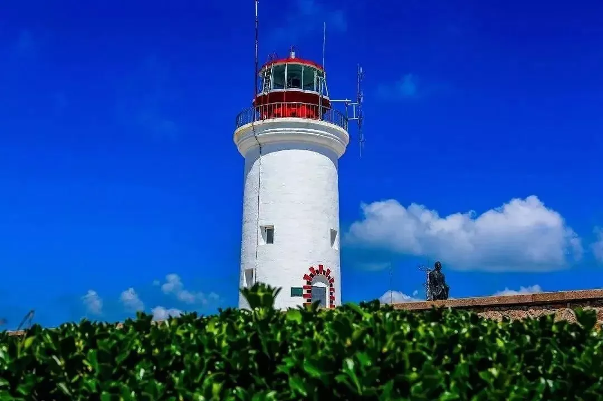
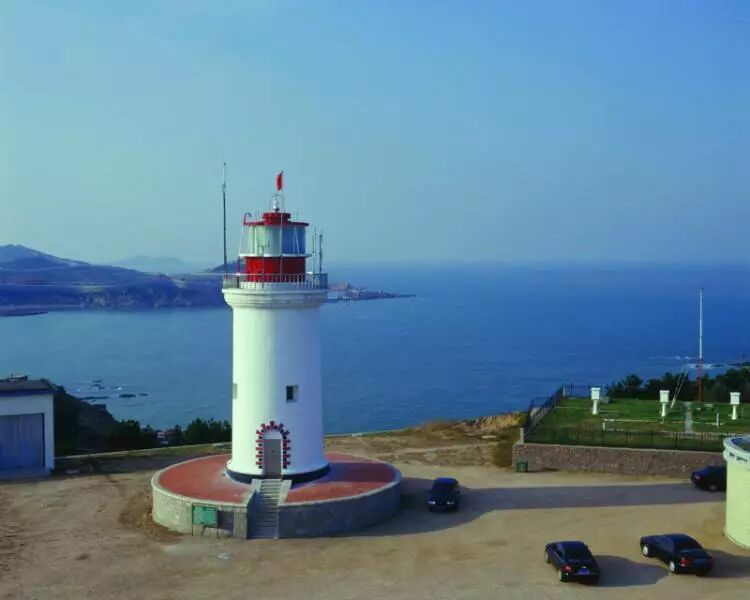
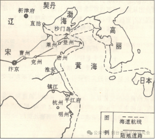
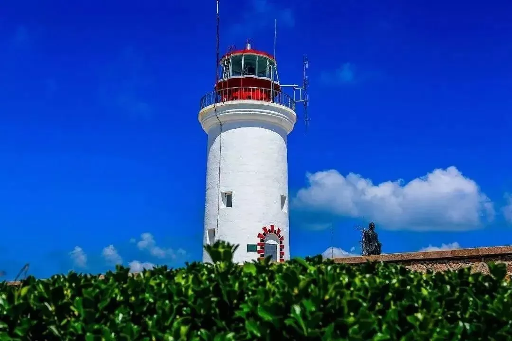
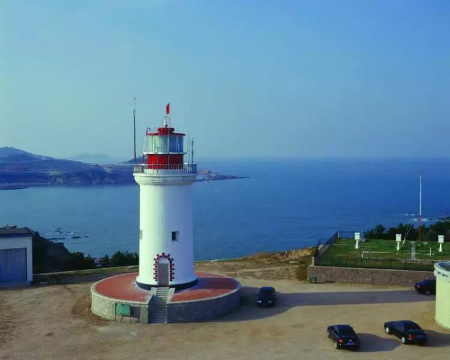
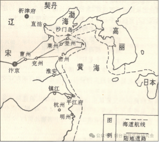

超越烽火，成山头也是千年海上通衢的静默守望者。作为中国大陆海岸线最东端的显著地标，它的山形海势，自古便是引导航船的重要自然坐标。
至少自唐代以来，随着南北沿海航运与贸易的兴盛，成山头便成为海上交通的关键节点。
北上漕船、南下商舶，在穿越这片风急浪高的海域时，以此处的轮廓与日出方位为重要导航参照。商船常在此附近海域停泊，补充淡水给养。船员们祭祀海神，祈求平安；而活跃于登、莱等地的新罗侨民，有时亦会与过往的同乡船队进行联络与小额贸易。
成山头虽非传统港口，但其作为天然航标与临时避风锚地的功能，促进了周边沿海贸易点的活跃。南方的瓷器、丝绸、茶叶由此北运，北方的物产亦经此南下，使其海域成为一条繁忙的沿海文化走廊。
这种依托地标航行的传统延续了数个世纪。即便在明清海禁时期，成山头在官方与民间的沿海航行体系中，其航标地位依然不可替代。据《山东海上丝绸之路史》等研究，直至明清，此处仍是南北海运船只辨识方向、确保航线安全的重要参照。